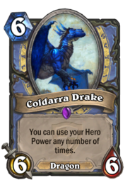
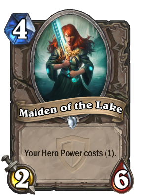

Hearthstone is a card game, and like many other card games each card has an attack and defense value. Although one quality of the game makes it very unique, that it's virtual. Hearthstone being virtual comes into play more and more with each new expansion. The basic cards, cards that were released with the game, are pretty basic; Most of them simply featuring an attack and defense and perhaps a simple mechanic like taunt or silence. With each new expansion released the developers are trying to satisfy their growing playerbase, with not only new cards but new mechanics.
Before we can continue with this analysis, you'll need to know what hero powers and the inspire mechanic are. If you're already familiar with them feel free to skip to the next paragraph!
In Hearthstone, there's 9 seperate classes/heroes each with a unique ability called a hero power, in the image below you can see each classes hero power and what they do. (from left to right, top row then bottom row: Warrior, Rogue, Mage, Priest, Warlock, Paladin, Druid, Hunter, Shaman) Each of these powers costs 2 mana and has a unique effect. The inspire mechanic on a card is triggered when a hero activated their hero power. Hero Powers can normally only be used once a turn unless another cards specifically states otherwise.
The inspire mechanic, was officially introduced in the most recent expansion, The Grand Tournament, but very loosely introduced unassociated with the term inspire by Goblins vs Gnomes and the Floating Watcher (pictured below). Floating Watcher is a warlock only card that gains +2 attack and defense whenever your hero takes damage during your own turn. Warlock's hero power not only costs two mana, but two health. Although there are other ways to deal damage to your face as a warlock (Flame Imp, Hellfire, Pit Lord,Weapon with Lord Jaraxxus or Blingtron 3000 ) for the sake of simplicity we'll assume most of the time you're going be using your hero power to buff the Floating Watcher.
Looking at the two cards above you should notice a lot of similarities: they both cost 5 mana, they both have 4 attack and 4 defense and they both share the same 'inspire' mechanic. The only differences are Kvaldir Raider is a neutral card that anyone can use and it was released one expansion later, The Grand Tournament, with the introduction of the inspire mechanic. Since each player only starts with 30 health, and each game can only be one by depleting your opponents or one player conceding, health is normally seen as a very valuable resource. When Floating Watcher was released it was balanced because the player had to hurt themself in order to increase their minion's stats, which would not only add risk and limit the extent of this growing effect but fit very well with the Warlock thematically. (Since his hero power is trading health and mana for a card, it made sense to trade health for your minions power as well.) The addition of Kvaldir Raider allowed other classes who have hero powers that don't require taking any damage, and can be used any number of times during a match to have access to the exact same minion that helped make warlock an interesting class. This is a good example of power creep, where as more content is released the original content becomes underpowered. Seemingly because of 'accidently' unbalanced cards moving the power required to be a playable X-mana card, but also to motivate players to get the new content (and spend the $$ doing it).
 Initially the Kvaldir Raider is still not that unbalanced. A good rule of thumb for stats in Hearthstone is a good card has stats that add up to at least double the mana cost for that card. The Raider starts as a relatively bad card, and every turn for 2 mana is able to grow. The card remains at a reasonable power level for the amount of mana used. (assuming it's played turn 5 -5 mana- turn 6: 5 original mana + hero power = -7 mana- 6 attack and defense, turn 7: -9 mana- 8 attack and defense, turn 8: -11 mana- 10 attack and defense , etc.) This constant growing obviously allows the card to make good 'trades' or kill without being killed with progressively larger minions until no minion in the game can trade with it on stats alone. This mechanic is obviously not easily abused since it requires keeping a single minion (the Kvaldir Raider) alive for so many turns. Now look at the next two cards pictured above, the Coldarra Drake and the Maiden of the Lake. Either of these two cards used with an inspire mechanic allow for either a much better card for the mana used, or a much faster growing card with the approriate mana still consumed. Used together these cards allow a player to exploit the inspire mechanic quite nicely. If the Maiden of the lake is played turn 4, the Kvaldir Raider turn 5, and the Coldarra Drake turn 6, turn 7 the kvaldir raider could be a 18 attack and defense minion (7 hero powers because of coldarra drake, each costing 1 mana because of maiden of the lake 7 * 2 + 4 = 18) Once again with each player only having 30 health, this minion could kill the opponent in only two turns assuming he hasn't taken 12 damage already. This rapid increase in stats is interesting, but very difficult to keep under control, and properly balance. I'm not sure if the cooperation between all of these cards was intended, but it's definitely an area where balance is hard to preserve.